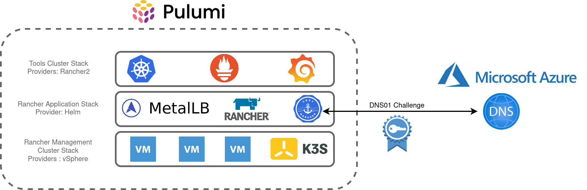

Taking a Modular Approach to my Homelab with Pulumi
Architecture
After reviewing the key components of my lab environment, I translated these into the Pulumi stacks as illustrated in the diagram below. Pulumi has a blog post about the benefits of adopting multiple stacks and I found organising my homelab this way enables greater flexibility and organisation. I can also use stacks as a “template” to further build out my lab environment, for example, repeating the “Tools-Cluster” stack to add additional clusters.

The main objectives are:
- Create a 3 node, K3s cluster utilising vSphere VM’s
- Install Metallb, Rancher and Cert-Manager into this cluster
- Using Rancher, create an RKE2 cluster to accommodate shared tooling services, ie:
- Rancher Monitoring Stack (Prometheus, Grafana, Alertmanager, etc)
- Hashicorp Vault
- etc
Building
Each stack contains the main Pulumi code, a YAML file to hold various variables to influence parameters such as VM names, Networking config, etc.
├── rancher-application
│ ├── Assets
│ │ └── metallb
│ │ └── metallb-values.yaml
│ ├── go.mod
│ ├── go.sum
│ ├── main.go
│ ├── Pulumi.dev.yaml
│ └── Pulumi.yaml
├── rancher-management-cluster
│ ├── Assets
│ │ ├── metadata.yaml
│ │ └── userdata.yaml
│ ├── go.mod
│ ├── go.sum
│ ├── main.go
│ ├── Pulumi.dev.yaml
│ └── Pulumi.yaml
└── rancher-tools-cluster
├── Assets
│ └── userdata.yaml
├── go.mod
├── go.sum
├── main.go
├── Pulumi.dev.yaml
└── Pulumi.yaml
Each stack has a corresponding assets directory which contains supporting content for a number of components:
- Rancher Application - Values.yaml to influence the metallb L2 VIP addresses
- Rancher Management Cluster - Userdata and Metadata to send to the created VM’s, including bootstrapping K3s
- Rancher Tools Cluster - Userdata to configure the local registry mirror
Rancher Management Cluster Stack
This is the first stack that needs to be created and is relatively simple in terms of its purpose. The metadata.yaml contains a template for defining cloud-init metadata for the nodes:
network:
version: 2
ethernets:
ens192:
dhcp4: false
addresses:
- $node_ip
gateway4: $node_gateway
nameservers:
addresses:
- $node_dns
local-hostname: $node_hostname
instance-id: $node_instance
userdata.yaml contains k3s-specific configuration pertaining to my local registry mirror as well a placeholder for the K3S bootstrapping process, $runcmd.
#cloud-config
write_files:
- path: /etc/rancher/k3s/registries.yaml
content: |
mirrors:
docker.io:
endpoint:
- "http://172.16.10.208:5050"
runcmd:
- $runcmd
Creating the VM’s leverages the existing vSphere Pulumi provider, seeding the nodes with cloud-init user/metadata which also instantiates K3s.
userDataEncoded := base64.StdEncoding.EncodeToString([]byte(strings.Replace(string(userData), "$runcmd", k3sRunCmdBootstrapNode, -1)))
vm, err := vsphere.NewVirtualMachine(ctx, vmPrefixName+strconv.Itoa(i+1), &vsphere.VirtualMachineArgs{
Memory: pulumi.Int(6144),
NumCpus: pulumi.Int(4),
DatastoreId: pulumi.String(datastore.Id),
Name: pulumi.String(vmPrefixName + strconv.Itoa(i+1)),
ResourcePoolId: pulumi.String(resourcePool.Id),
GuestId: pulumi.String(template.GuestId),
Clone: vsphere.VirtualMachineCloneArgs{
TemplateUuid: pulumi.String(template.Id),
},
Disks: vsphere.VirtualMachineDiskArray{vsphere.VirtualMachineDiskArgs{
Label: pulumi.String("Disk0"),
Size: pulumi.Int(50),
}},
NetworkInterfaces: vsphere.VirtualMachineNetworkInterfaceArray{vsphere.VirtualMachineNetworkInterfaceArgs{
NetworkId: pulumi.String(network.Id),
},
},
ExtraConfig: pulumi.StringMap{
"guestinfo.metadata.encoding": pulumi.String("base64"),
"guestinfo.metadata": pulumi.String(metaDataEncoded),
"guestinfo.userdata.encoding": pulumi.String("base64"),
"guestinfo.userdata": pulumi.String(userDataEncoded),
},
},
)
if err != nil {
return err
}
The first node initiates the K3s cluster creation process. Subsequent nodes have their $rucmd manipulated by identifying the first node’s IP address and using that to join the cluster:
userDataEncoded := vms[0].DefaultIpAddress.ApplyT(func(ipaddress string) string {
runcmd := fmt.Sprintf(k3sRunCmdSubsequentNodes, ipaddress)
return base64.StdEncoding.EncodeToString([]byte(strings.Replace(string(userData), "$runcmd", runcmd, -1)))
}).(pulumi.StringOutput)
vm, err := vsphere.NewVirtualMachine(ctx, vmPrefixName+strconv.Itoa(i+1), &vsphere.VirtualMachineArgs{
Memory: pulumi.Int(6144),
Rancher Application Stack
This stack makes extensive use of the (currently experimental) Helm Release Resource as well as the cert-manager package from the Pulumi Registry
For example, creating the Metallb config map based on the aforementioned asset file:
metallbConfigmap, err := corev1.NewConfigMap(ctx, "metallb-config", &corev1.ConfigMapArgs{
Metadata: &metav1.ObjectMetaArgs{
Namespace: metallbNamespace.Metadata.Name(),
},
Data: pulumi.StringMap{
"config": pulumi.String(metallbConfig),
},
})
And the Helm release:
_, err = helm.NewRelease(ctx, "metallb", &helm.ReleaseArgs{
Chart: pulumi.String("metallb"),
Name: pulumi.String("metallb"),
Namespace: metallbNamespace.Metadata.Name(),
RepositoryOpts: helm.RepositoryOptsArgs{
Repo: pulumi.String("https://charts.bitnami.com/bitnami"),
},
Values: pulumi.Map{"existingConfigMap": metallbConfigmap.Metadata.Name()},
})
And for Rancher:
_, err = helm.NewRelease(ctx, "rancher", &helm.ReleaseArgs{
Chart: pulumi.String("rancher"),
Name: pulumi.String("rancher"),
Namespace: rancherNamespace.Metadata.Name(),
RepositoryOpts: helm.RepositoryOptsArgs{
Repo: pulumi.String("https://releases.rancher.com/server-charts/latest"),
},
Values: pulumi.Map{
"hostname": pulumi.String(rancherUrl),
"ingress.tls.source": pulumi.String("secret"),
},
Version: pulumi.String(rancherVersion),
}, pulumi.DependsOn([]pulumi.Resource{certmanagerChart, rancherCertificate}))
As I used an existing secret for my TLS certificate I had to create a cert-manager cert object, for which there are a number of options that I experimented with:
1. Read a file
Similarly to the metallb config, A file could be read that contained the YAML to create the Custom Resource type, although this was a feasible approach, I wanted something that was less error-prone.
2. Use the API extension type
The Pulumi Kubernetes provider enables the provisioning of the type NewCustomResource. For my requirements, this is an improvement over simply reading a YAML file, however, anything beyond the resources metadata isn’t strongly typed
rancherCertificate, err := apiextensions.NewCustomResource(ctx, "rancher-cert", &apiextensions.CustomResourceArgs{
ApiVersion: pulumi.String("cert-manager.io/v1"),
Kind: pulumi.String("Certificate"),
Metadata: &metav1.ObjectMetaArgs{
Name: pulumi.String("tls-rancher-ingress"),
Namespace: pulumi.String(rancherNamespaceName),
},
OtherFields: kubernetes.UntypedArgs{
"spec": map[string]interface{}{
"secretName": "tls-rancher-ingress",
"commonName": "rancher.virtualthoughts.co.uk",
"dnsNames": []string{"rancher.virtualthoughts.co.uk"},
"issuerRef": map[string]string{
"name": "letsencrypt-staging",
"kind": "ClusterIssuer",
},
},
},
}, pulumi.DependsOn([]pulumi.Resource{certmanagerChart, certmanagerIssuers}))
3. Use crd2pulumi
[crd2pulumi](https://github.com/pulumi/crd2pulumi) is used to generate typed CustomResources based on Kubernetes CustomResourceDefinitions, I took the cert-manager CRD’s and ran it through this tool, uploaded to a repo and repeated the above process:
import (
certmanagerresource "github.com/david-vtuk/cert-manager-crd-types/types/certmanager/certmanager/v1"
...
...
)
rancherCertificate, err := certmanagerresource.NewCertificate(ctx, "tls-rancher-ingress", &certmanagerresource.CertificateArgs{
ApiVersion: pulumi.String("cert-manager.io/v1"),
Kind: pulumi.String("Certificate"),
Metadata: &metav1.ObjectMetaArgs{
Name: pulumi.String("tls-rancher-ingress"),
Namespace: pulumi.String(rancherNamespaceName),
},
Spec: &certmanagerresource.CertificateSpecArgs{
CommonName: pulumi.String(rancherUrl),
DnsNames: pulumi.StringArray{pulumi.String(rancherUrl)},
IssuerRef: certmanagerresource.CertificateSpecIssuerRefArgs{
Kind: leProductionIssuer.Kind,
Name: leProductionIssuer.Metadata.Name().Elem(),
},
SecretName: pulumi.String("tls-rancher-ingress"),
},
})
Much better!
Tools Cluster Stack
Comparatively, this is the simplest of all the Stacks. Using the Rancher2 Pulumi Package makes it pretty trivial to build out new clusters and install apps:
_, err = rancher2.NewClusterV2(ctx, "tools-cluster", &rancher2.ClusterV2Args{
CloudCredentialSecretName: cloudcredential.ID(),
KubernetesVersion: pulumi.String("v1.21.6+rke2r1"),
Name: pulumi.String("tools-cluster"),
//DefaultClusterRoleForProjectMembers: pulumi.String("user"),
RkeConfig: &rancher2.ClusterV2RkeConfigArgs{
.........
}
monitoring, err := rancher2.NewAppV2(ctx, "monitoring", &rancher2.AppV2Args{
ChartName: pulumi.String("rancher-monitoring"),
ClusterId: cluster.ClusterV1Id,
Namespace: pulumi.String("cattle-monitoring-system"),
RepoName: pulumi.String("rancher-charts"),
}, pulumi.DependsOn([]pulumi.Resource{clusterSync}))